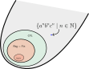

A Pumping Lemma for Context-free Languages
Let's start with a simple exercise.
(Knowing you ABCs)
Let \(A = \{a,b,c\}\).
Try to design a context-free grammar with a variable that derives the language
\[
L = \{a^nb^nc^n \mid n \in \mathbb N\}
\]
What got in your way?
Now design the simplest algorithm you can for deciding whether a given word \(w \in A^*\) is in \(L\).
What kinds of things did you need in the algorithm?
Something got in your way. What was it? Well, as you might be able to glean from the tone of that exercise, it is not possible to recognize \(\{a^nb^nc^n \mid n \in \mathbb N\}\) with a context-free grammar (or equivalently, with a sytack automaton). This language lies outside of \(\mathsf{CFL}\)! 